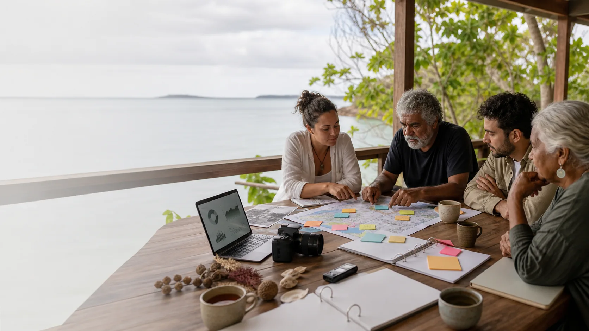

9 Ballow Trust Hub
Ready S.E.T. Co-op Trust Hub centres the 9 Ballow Road front-desk idea and keeps deeper horizons optional.
Open Trust Hub
Evidence and tensions
This page names the source lanes, the official anchors, and the places where a community decision is needed instead of a tidy answer.
Checked on 9 June 2026
Local archive lanes
Connected local repos checked
Ready S.E.T. Co-op Trust Hub centres the 9 Ballow Road front-desk idea and keeps deeper horizons optional.
Open Trust HubBallow Road Sand & Screen Hub names 10-12 Ballow Road as the proposed greenfield sand-sport and screen site.
Open Sand & ScreenReady S.E.T. Hyperlocal Media and Straddie Noticeboard Network are paired as local publishing and notice layers.
The ferry lab is the same-town public infrastructure and open-data bridge for the Junner Street upgrade.
Open ferry labOpen questions
"Community sovereign wealth fund" is bold. "Community future fund" may be clearer. "Mutual care fund" is warmer. The name can match the first real use.
Urgent need is real. Future protection is also real. A community can choose a visible split between immediate help, reserve, and protected capital.
Personal consent is not enough for collective cultural data. The right First Nations governance process is the place to set the rules.
Community-Hour (C-Hour) style recognition could cross into employment, tax, financial product, or digital asset territory. Public promises are safer after advice.
Public liability, worker safety, events, property, and volunteer cover may need ordinary insurance even if a mutual protection pool exists nearby.
A friendly community meeting does not replace a Prescribed Body Corporate, cultural authority, member vote, trustee duty, regulator, insurer, or court-recognised process.
Source posture
This site keeps strong ideas in public language, while staying honest about the legal work. Live projects are safer with proper community mandate, cultural authority, legal drafting, financial advice, insurance advice, tax advice, privacy design, and governance support.